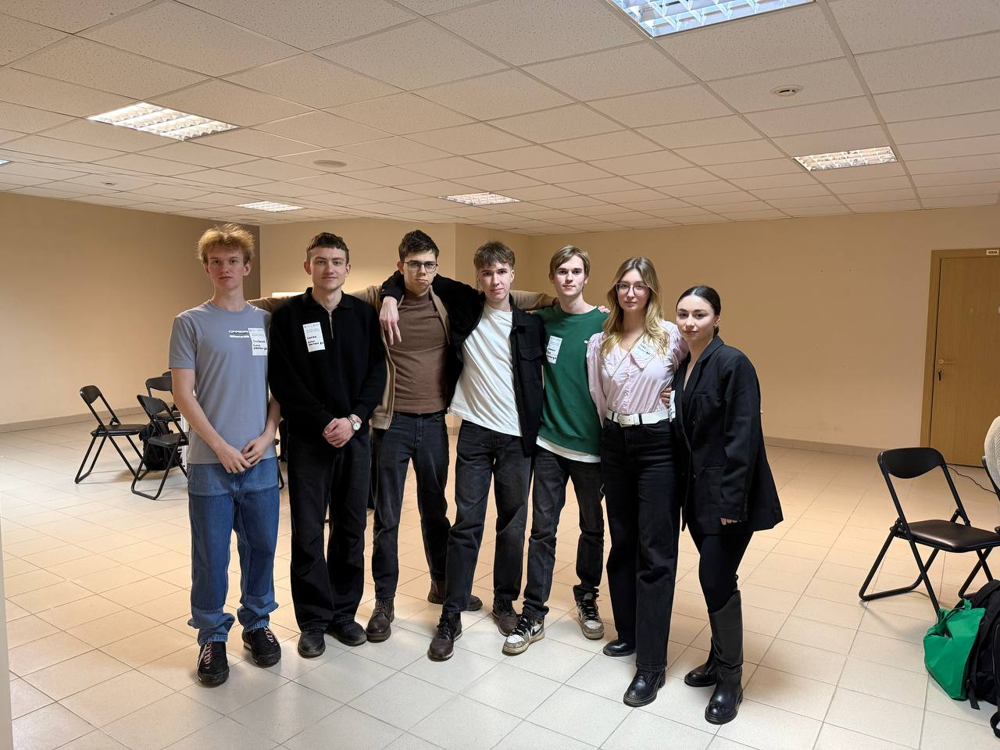

О проекте «АСАДа»
В чем заключается идея нашего проекта?
Современные курьерские службы сталкиваются с необходимостью повышения эффективности, сокращения времени доставки и минимизации затрат. В условиях жесткой конкуренции и растущего спроса традиционные методы управления доставкой становятся невыгодными, особенно для организаций, работающих с государственной тайной и требующих особых условий транспортировки. В связи с этим возникает необходимость в разработке эффективной автоматизированной системы для управления процессами доставки в компании-заказчике, которая сможет оптимизировать все этапы логистики и обеспечить надежность и безопасность перевозок.
Узнать больше о процессе разработки...Команда АСАДа
В проекте участвуют 50 студентов, объединённых общей целью и стремлением к высоким результатам. Каждый вносит свой вклад, применяя знания, технические навыки и инициативу. Мы активно взаимодействуем, обмениваемся идеями и поддерживаем друг друга на всех этапах работы. На учебных занятиях мы анализируем ход проекта и обсуждаем возможные улучшения. Команда работает ответственно и слаженно, что позволяет уверенно продвигаться к завершению проекта.
Помимо этого, наши ребята принимают участие в различных конкурсах и активностях!
Ниже, вы можете перейти на страницу, где описан личный вклад кажого из участников нашей конкретно группы.
Задачи проекта
Задача 1
Создание нового концепта, влияющего на привлечение будущих клиентов.
Задача 2
Создание индивидуальной среды для пользования веб-платформы клиентами, удовлетворенности в предоставленных услугах.
Задача 3
Создание надежной бизнес-логики, которая будет отражать текущие процессы и потребности компании, обеспечивая надежность и эффективность системы.
Задача 4
Внедрение системы в текущие бизнес-процессы ООО «ABH Бизнес», минимизируя возможные риски.
Руководство
Руководящая команда проекта состоит из шести ключевых участников, каждый из которых вносит значительный вклад в успешную реализацию задачи.
Во главе стоит руководитель проекта Ярослав Владимирович Никулин, обладающий богатым опытом в бизнесе и преподавательской деятельности.
- Координацию работы и мотивацию команды обеспечивает тимлид Артём Чистяков, который отвечает за организацию процесса и взаимодействие с заказчиками.
- Техническую часть проекта возглавляют два руководителя направлений разработки: Илья Андреевич Тамьяров, ответственный за фронтенд, и Алексей Игоревич Степаненко, курирующий бэкенд.
- Медиа-направление возглавляет Екатерина Георгиевна Субботкина, которая отвечает за создание контента и коммуникацию внутри команды.
- Направление дизайна курирует Илья Воротилин, контролирующий визуальную составляющую проекта и работу дизайнеров (является участником нашей группы).
Все руководители проявляют высокий профессионализм, ответственность и поддерживают командный дух, способствуя эффективной и слаженной работе над проектом.